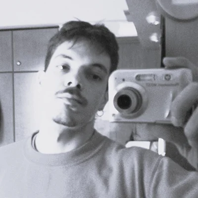

Have you ever gone on a solo trip and come back wondering, what was that?
Well, in early December 2025, during a difficult time for me I went on a solo trip to London for 6 days (thank you Christina for hosting me) and even thousands of kilometers away from home I carried all the trouble with me.They were constantly mixing with the joy and excitement of the trip.
This is an attempt to revisit my experiences and feelings through a collection of photos I took with my digital camera while wandering around London.
This website was built by me. I used plain HTML, CSS and vanilla Javascript. Its design is inspired by brutalist web design principles that you can find here. I tried to keep everything simple, accessible and optimized, using minimal decorations and animation.
This is my second web project so if you have any constructive feedback I’d love to hear it :)

I am yorgos, I like building nice things, taking pictures, analysing environmental policy, identifying species, acrylic painting, charcoal drawing, planting, watering, uprooting invasives, watching funny reels, deleting my social media once in a while and screaming loud in my car while driving. I want to learn how to make nice websites.
You can contact me at grgsnizamis@gmail.com.